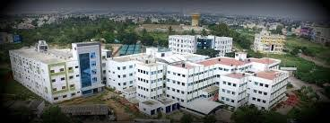

column 2
Established in 1997, VVCE is an autonomous institute affiliated
to Visvesvaraya Technological University (VTU), Belagavi,
approved by AICTE & UGC, New Delhi and recognized by Govt.
of Karnataka. Five UG programs are accredited by National Board
of Accreditation, New Delhi. VVCE is also accredited by NAAC
with “A” grade. VVCE offers six UG programs, three PG programs
and nine Research Centres for pursuing PhD programs, with a total
student population of over 3200.
